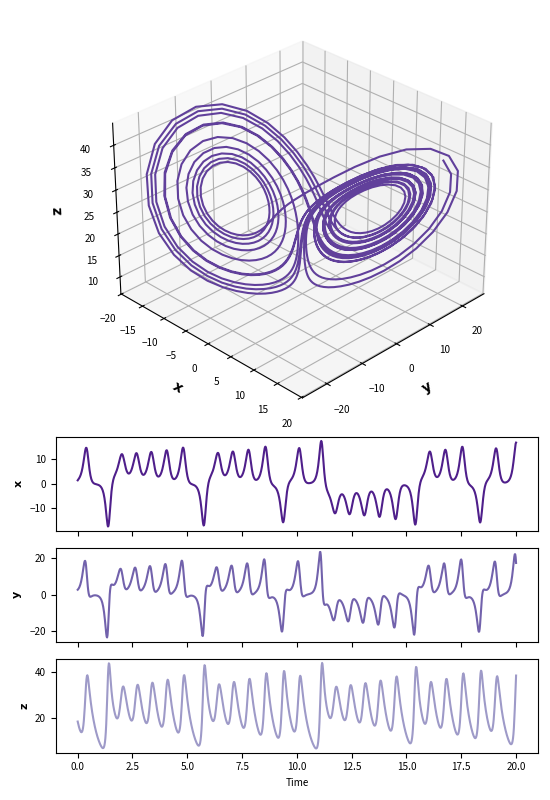
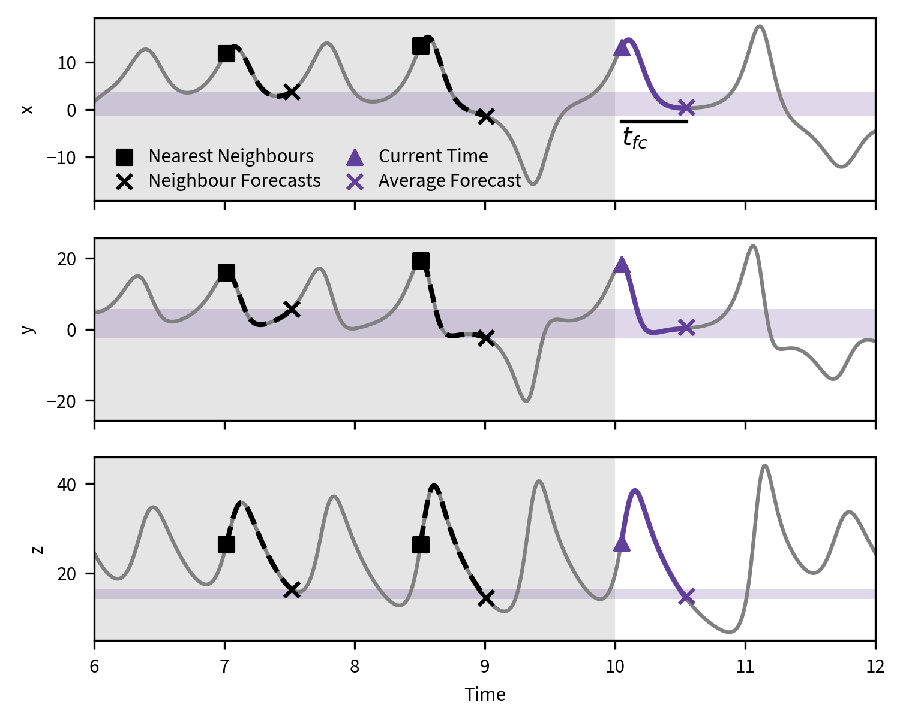
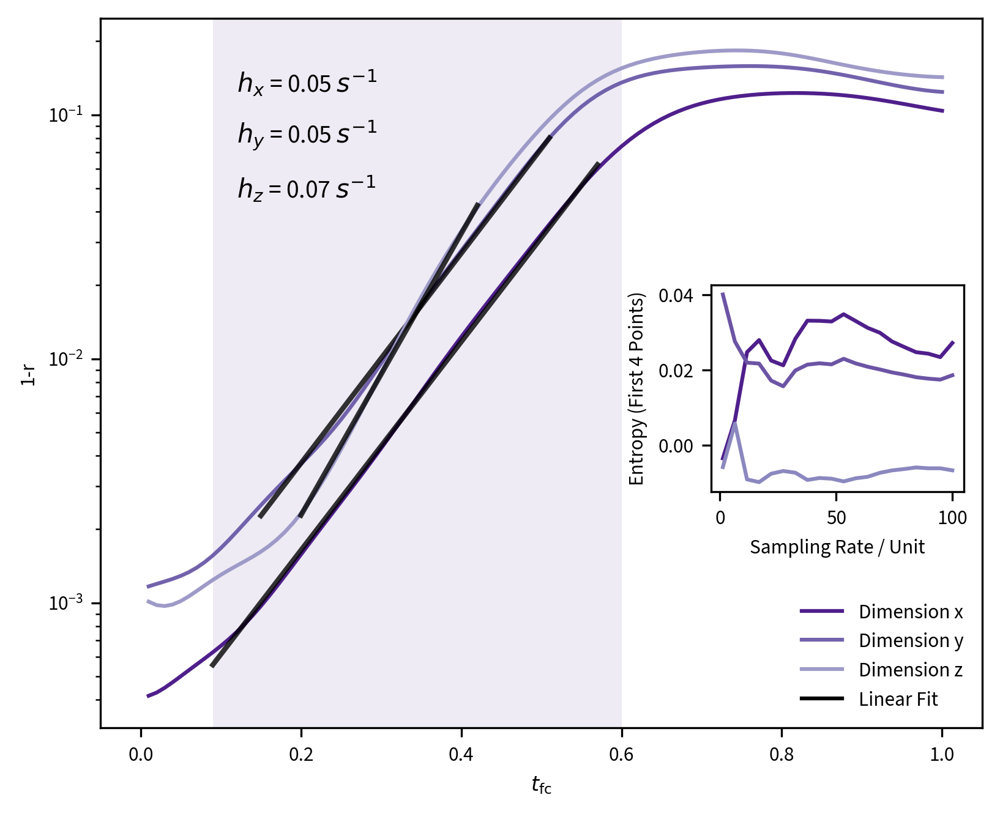
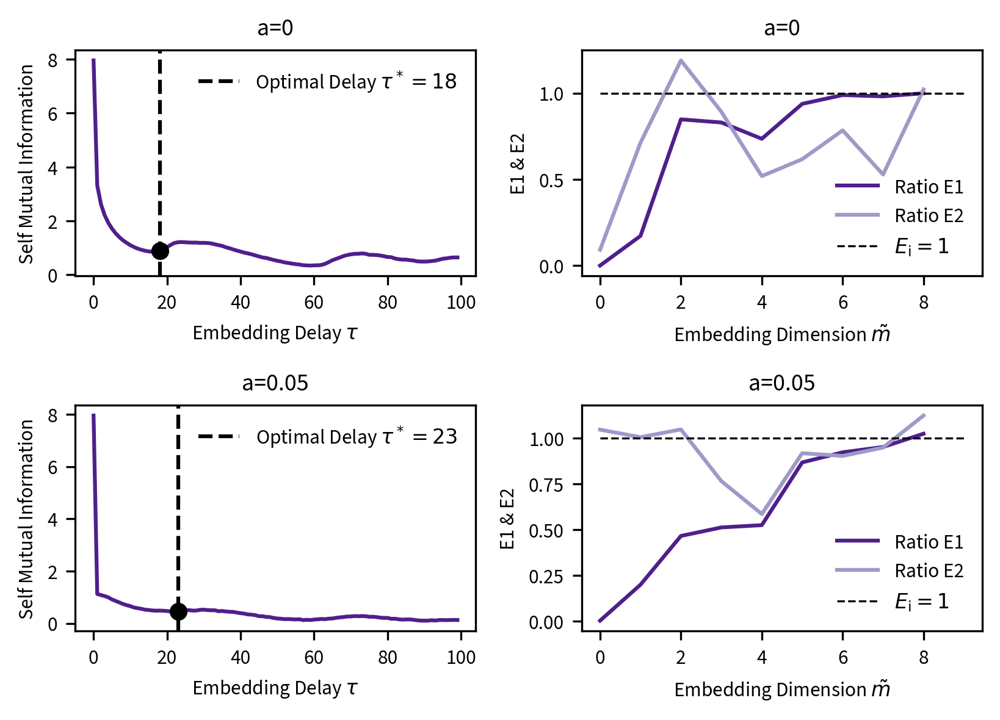

Lorenz attractor simulation was used to test ways of reconstructing chaotic systems. Nearest neighbour forecasting was implemented; as were several information theoretical metrics, such as the metric entropy, Cao's method coefficients and self mutual information for choosing optimal embedding dimension.
The Lorenz attractor is a simplified convective system and is important as a chaotic deterministic system. The embedding process reveals that it's possible to extract information from limited datasets over short time periods. Nearest neighbour forecasting suggests that even chaotic systems believe predictably with enough training data.Aims
Explore the dynamics of the Lorenz system by numerical simulation.- Calculate the Metric Entropy of the Lorenz system using the forecasting error of the k-nearest neighbour method.
- Compute the Lyapunov spectrum of the system.
- Find the best embedding parameters for the Lorenz system using Cao’s method and the self- mutual information.
- Perform the same calculations with added noise.
Selected Figures




×

Full Report
❮
❯